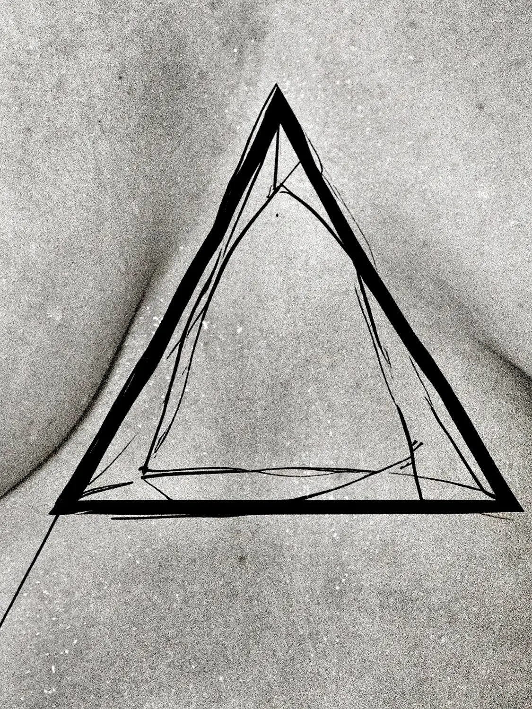

מבט מקרוב
מפגש פתוח בתוך התערוכה
how many partners have u had?
האירוע מועבר על ידי האמנית הוויזואלית והצלמת טניה שין.
במהלך המפגש נדבר על הרעיונות שמאחורי יצירות האומנות ועל האמנים המשתתפים בתערוכה.
נדבר על צילום, אמנות, תהליכי יצירה ומה שקורה מאחורי העבודות שמוצגות על הקירות.
הכניסה פתוחה לכולם 🤍
כיכר דיזינגוף, ריינס 1, תל אביב

how many partners have u had?
מבט מקרוב